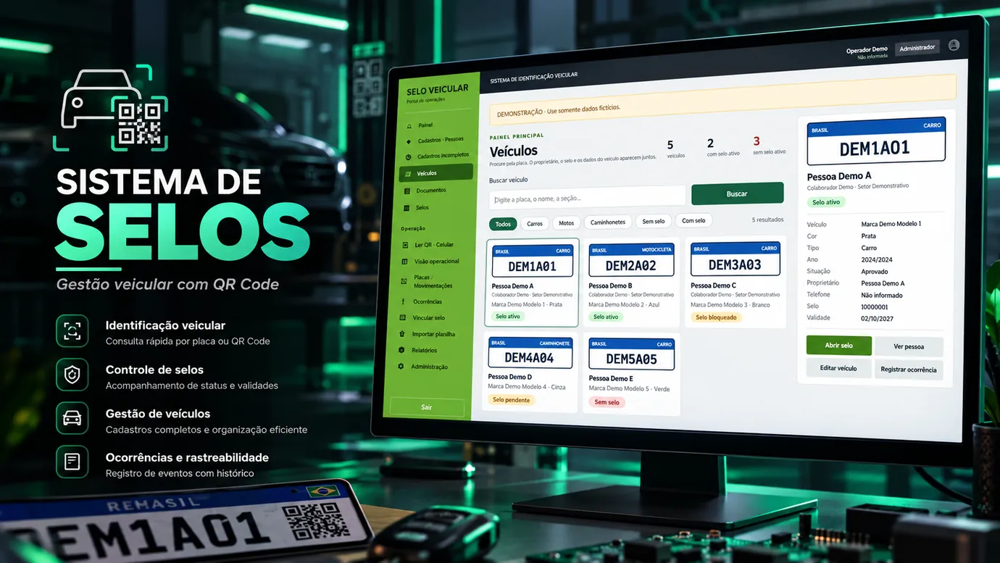

PYTHON / DJANGO
Sistema de Selos
Aplicação para cadastros e identificação veicular com QR Code, ocorrências e revisão LPR. Versão pública sanitizada com testes documentados.
Estudos de caso com problema, tecnologias, participação e evidências públicas. As imagens dos projetos são ilustrativas, exceto a Sala Vanguardeira, que utiliza registro fotográfico real. Resultados documentados e limites estão em cada estudo de caso.

Aplicação para cadastros e identificação veicular com QR Code, ocorrências e revisão LPR. Versão pública sanitizada com testes documentados.

Participação no reaproveitamento de mais de 60 TV Boxes ARM como estações Linux para atividades educacionais e de laboratório.

Stack auto-hospedado com Ollama e Open WebUI. Scripts de operação e integrações em desenvolvimento, com status informado no estudo de caso.
Projeto de organização e visualização de infraestrutura de câmeras. Ainda não há um estudo de caso público com evidências suficientes para divulgação. Não são publicados endereços, topologia interna nem dados de equipamentos.